アマチュア無線とフリラーの両方に対応した、日本語の交信ログアプリ「HamLogJP（無線交信ログ帳）」の使い方ガイドです。iPhone・iPad・Mac 共通の操作を、画面付きで順に説明します。
対応: iOS / iPadOS / macOS ・ 無料版＋プレミアムHamLogJP は、アマチュア無線とフリラー（デジタル簡易無線・CB・特小・LCR ほか）の交信記録を、1つのアプリで管理できる日本語のログアプリです。iPhone・iPad・Mac でネイティブに動作します。
本アプリは端末に合わせて2つのレイアウトで動作します。
左に機能メニュー、中央に交信ログの一覧、右に入力欄が並びます。過去の交信を見ながら、そのまま次のログを入力できます。
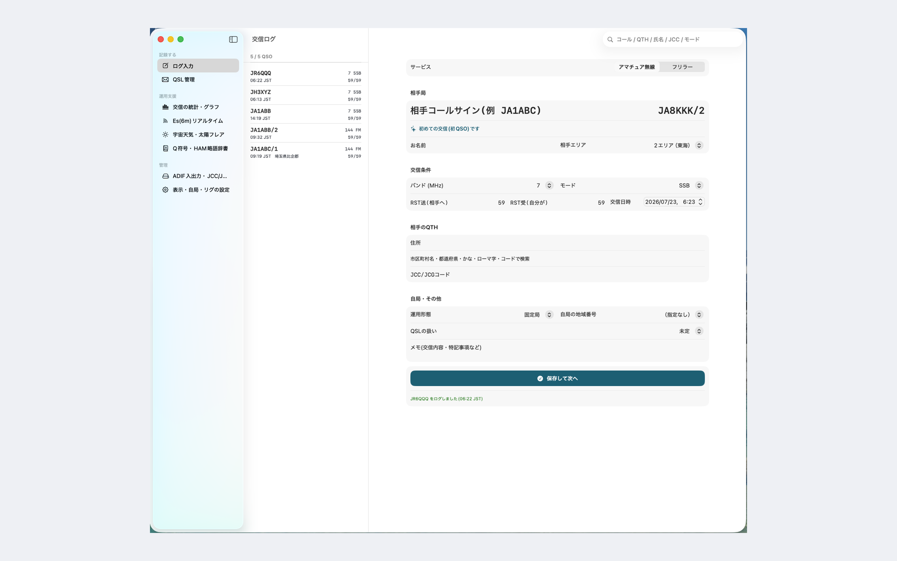
相手コール欄を大きく取り、バンドやモードはタップ（チップ）で選びます。左上のメニューから各機能に移動します。
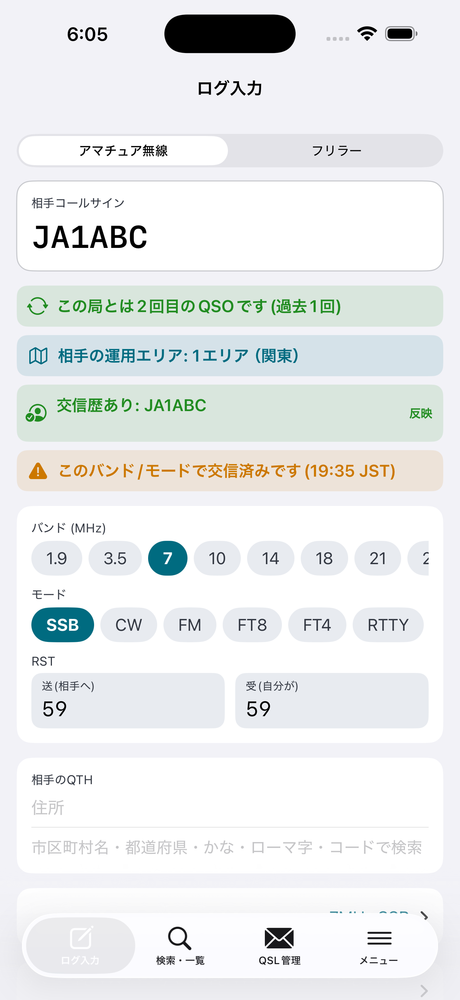
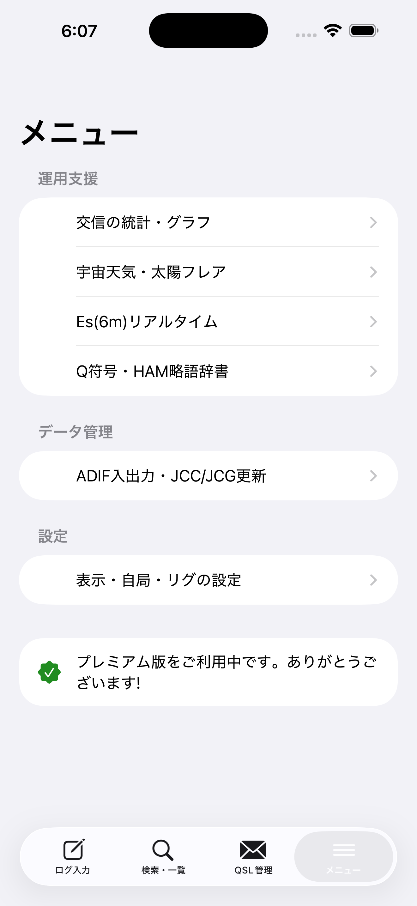
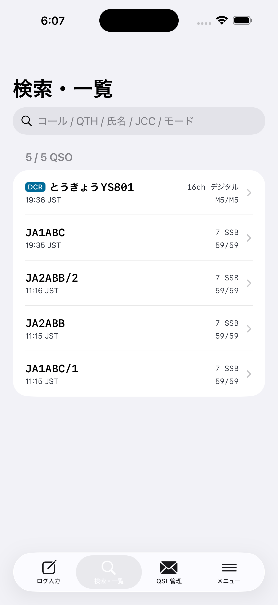
「ログ入力」画面で1件ずつ記録します。基本の流れは ①サービスを選ぶ → ②相手コール／バンド・モード → ③RSTと相手情報 → ④「保存して次へ」 です。
画面上部の「サービス」で アマチュア無線 と フリラー を切り替えます。切り替えると、入力欄がそれぞれに最適化されます（アマチュアはバンド／モード、フリラーは無線種別／チャンネル）。
アマチュアではバンド（MHz）とモードをタップで選びます。モードには音声（SSB/CW/FM/AM）や FT8 等に加えて、デジタル音声モード（DV・D-STAR・C4FM・DMR）を標準で用意しています。
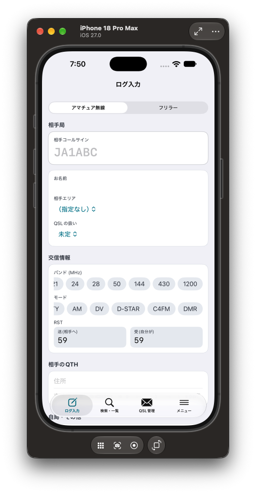
RST（送信＝相手へ／受信＝自分が受けた）を入力します。相手のお名前・QTH（住所）を記録でき、QTH 欄は市区町村名・都道府県・かな・ローマ字・コードのいずれでも検索できます。
「保存して次へ」で1件を記録し、次の交信に備えて入力欄がリセットされます（自局の運用設定は保持されます）。
サービスを「フリラー」にすると、無線種別とチャンネルを選べます。
| 無線種別 | 内容 | チャンネル |
|---|---|---|
| DCR | デジタル簡易無線（351MHz） | 1〜82ch から選択 |
| CB | 市民ラジオ（27MHz） | 1〜8ch から選択 |
| 特小 | 特定小電力（422MHz） | L1〜L11 / b1〜b9 |
| LCR | デジタル小電力コミュニティ | 1〜18ch から選択 |
| Zello | アプリ無線（スマホPTT・インターネット） | ルーム名を自由入力 |
| エアインカムライト | アプリ無線（IP・スマホPTT） | ルーム名を自由入力 |
Zello / エアインカムライトは固定チャンネルを持たないため、チャンネル欄が「チャンネル / ルーム名」の自由入力に自動で切り替わります。使ったルーム名をそのまま記録できます。
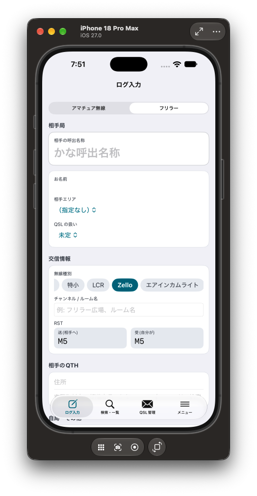
移動運用（POTA＝Parks on the Air、SOTA＝Summits on the Air）に対応しています。
「データ」画面の「コンテスト提出ログ書き出し（JARL形式）」から、JARL 電子ログ形式（VERSION=R2.1）のサマリーシート＋ログシートを作成できます。主要8大会に対応しています。
| 大会 | ナンバー | 時刻 |
|---|---|---|
| ALL JA コンテスト | RST＋都府県・地域ナンバー＋電力記号 | JST |
| 6m AND DOWN | RST＋地域(or市郡区)＋電力記号 | JST |
| フィールドデー | RST＋地域(or市郡区)＋電力記号 | JST |
| 全市全郡（ACAG） | RST＋市郡区ナンバー＋電力記号 | JST |
| ALL ASIAN DX | RST＋年齢（または01） | UTC |
| QSOパーティ | RST＋オペレータ名 | JST |
| JARL World Wide RTTY | RST＋年齢（または01） | UTC |
| ウェルカムパーティ | RST＋初開局年下2桁＋局種 | JST |
使い方：大会と参加部門（局種コード）、対象期間を選び、提出者情報（氏名・住所・E-mail など）を入力すると、テキスト（.txt）で書き出せます。大会ごとに部門コード・ナンバー様式・時刻（JST/UTC）へ自動で合わせます。
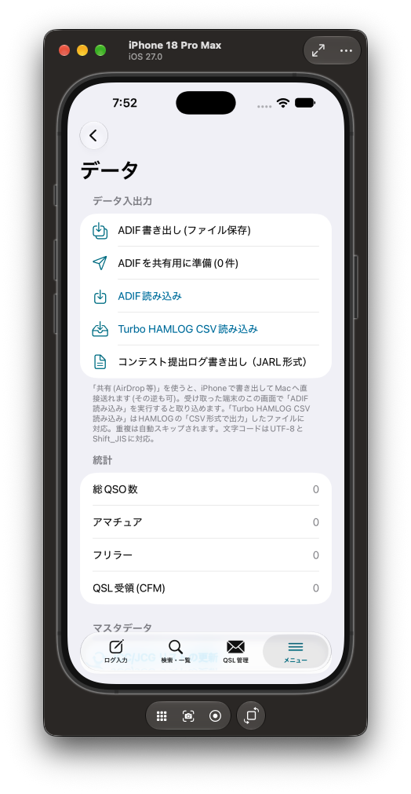
交信ごとに QSL の扱い（ビューロー経由・ダイレクト・電子QSLのみ・不要）を設定でき、発送／受領の状況を管理できます。紙カードの発送対象を一覧で確認できます。
月別・バンド別・モード別に交信を振り返れます。年間の交信数やアクティブなバンドがひと目で分かります。
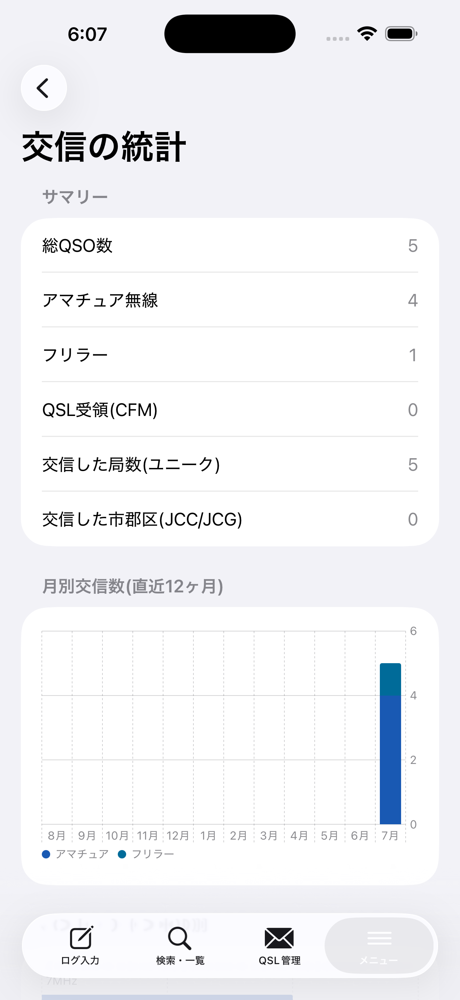
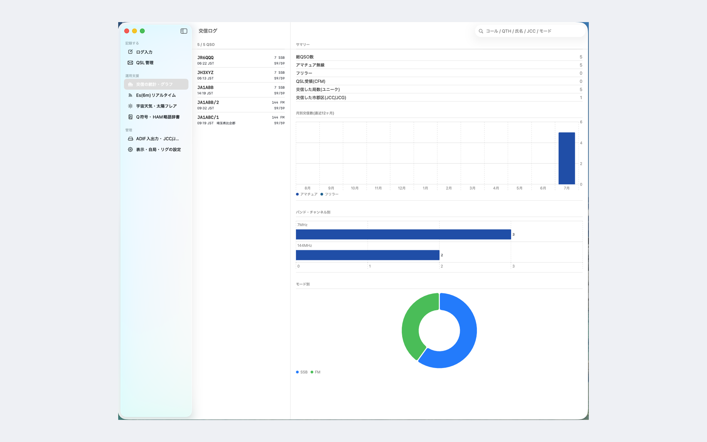
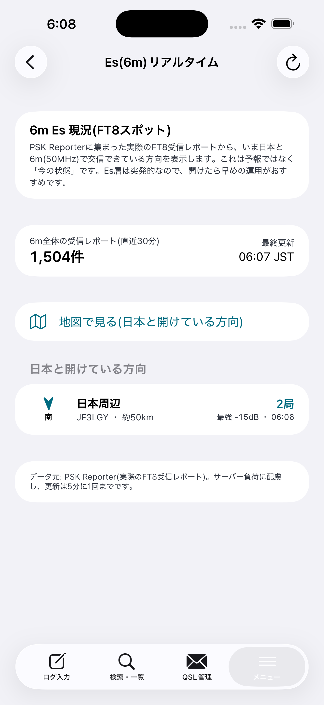
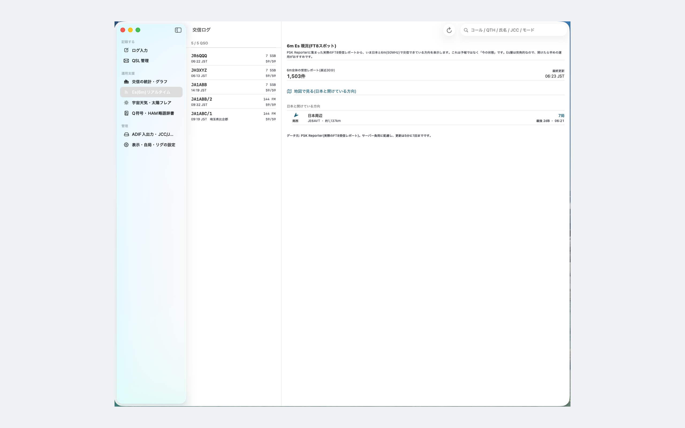
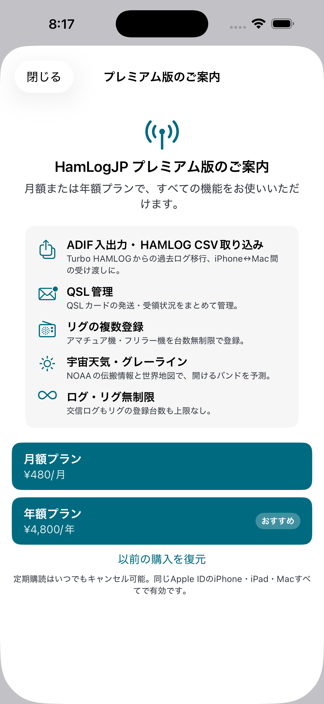
無料版 交信ログ 200 件まで／アマ・フリラーの記録／過去交信・重複表示／JCC・JCG 検索／統計グラフ
プレミアム ¥480/月・¥4,800/年：交信ログ無制限／ADIF 入出力・Turbo HAMLOG 取り込み／QSL 管理／6m Es・宇宙天気／iPhone・iPad・Mac 共通
ご質問・ご要望は下記のお問い合わせ先までお寄せください。アップデートで随時改善しています。